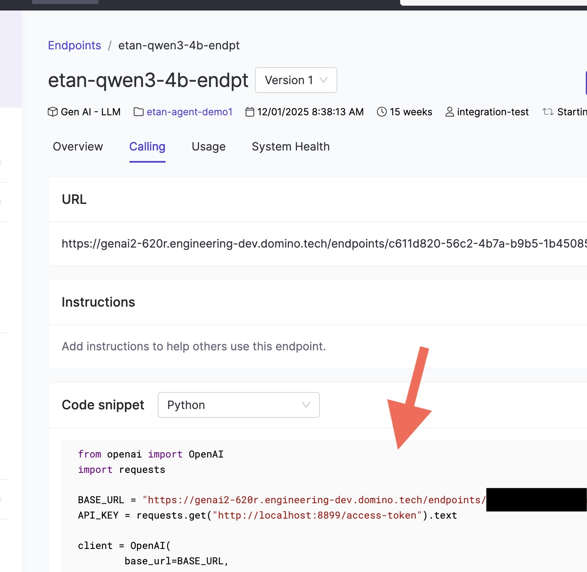

Register and deploy LLMs
Domino lets you register large language models (LLMs) and deploy them as hosted endpoints with optimized inference. These endpoints provide OpenAI-compatible APIs that your agentic systems and applications can call directly.
You can register models from Hugging Face or from your experiment runs, then deploy them as endpoints. You'll need Project Collaborator permissions to register models and create endpoints.
Plan your endpoint deployment
Before creating an endpoint, consider these key factors to ensure optimal performance and cost-efficiency:
Understand your model's requirements
Check your model's documentation for minimum memory and compute requirements. Choose appropriate resource sizes based on requirements and expected usage patterns.
Size resources appropriately for expected usage
Account for concurrent users: if you expect high throughput or multiple simultaneous requests, minimal GPU sizes may cause slowdowns. Scale up the hardware tier or consider deploying multiple endpoints.
Balance performance against cost. Start with a tier that meets your requirements and monitor performance before scaling up.
GPU is required. LLM inference is compute-intensive. Always select a GPU-enabled hardware tier for your endpoint. CPU-only tiers will not provide acceptable latency for model serving. Choose a tier with enough GPU memory (VRAM) to hold your model's weights — for example, a 7B-parameter model typically needs at least 16 GB of VRAM.
Step 1: Register a model
Register a model to make it available for deployment as an endpoint. Go to Models > Register to get started.
Choose your model source:
- Hugging Face models that you have access to, or
- Experiment runs that include a logged MLflow model.
Complete the required fields.
Step 2: Create an endpoint
After registering a model, you can deploy it as an endpoint. From your registered model's Endpoints tab, click Create endpoint.
Complete the endpoint configuration details:
- Choose a name and description for the endpoint.
- Under Environment, select Domino vLLM Environment. This environment is pre-configured with the vLLM runtime, which provides optimized inference and an OpenAI-compatible API out of the box.
- Under Hardware Tier, select a GPU-enabled resource size. Match the GPU memory to your model's requirements — larger models need more VRAM. For example, use a tier with at least 24 GB GPU memory for 13B+ parameter models.
- Configure access controls by adding users or organizations for access to this endpoint.
Some hosted models require the following settings under Configuration > Advanced Tab > vLLM arguments in order to work with agent frameworks that use tool calling:
--enable-auto-tool-choice
--tool-call-parser hermes
Click Create endpoint. The endpoint deploys with the vLLM runtime, which provides optimized inference performance and OpenAI-compatible APIs.
Step 3: Get your endpoint URL and call it from an agent
Once your endpoint is running, navigate to the Calling tab on the endpoint detail page. This tab provides:
- The endpoint URL — this is the
base_urlyour agent code will use. - A Code snippet showing how to connect using the OpenAI Python SDK.

Copy the URL from the Calling tab. Inside a Domino workspace or Job, the API key is available automatically at http://localhost:8899/access-token. Use these values to connect your agent to the Domino-hosted model.
Use the endpoint from a Pydantic AI agent
Domino endpoints are OpenAI-compatible, so you can use the OpenAIProvider from Pydantic AI with a custom base_url pointing to your endpoint:
import os
import requests
from pydantic_ai import Agent
from pydantic_ai.models.openai import OpenAIChatModel
from pydantic_ai.providers.openai import OpenAIProvider
# Copy the URL from the Calling tab of your endpoint
ENDPOINT_URL = os.environ["DOMINO_LLM_ENDPOINT_URL"]
# Inside Domino, the access token is available at this local URL
API_KEY = requests.get("http://localhost:8899/access-token").text
model = OpenAIChatModel(
"your-model-name",
provider=OpenAIProvider(base_url=ENDPOINT_URL, api_key=API_KEY),
)
agent = Agent(model)
result = agent.run_sync("Summarize the latest quarterly report.")
print(result.output)Storing the endpoint URL. Rather than hard-coding the URL, store it as a Domino environment variable (e.g., DOMINO_LLM_ENDPOINT_URL). This lets you swap endpoints without changing code — useful when promoting from a dev endpoint to a production one.
Use the endpoint with the OpenAI SDK directly
If you prefer calling the endpoint without a framework, use the standard OpenAI Python client:
import os
import requests
from openai import OpenAI
ENDPOINT_URL = os.environ["DOMINO_LLM_ENDPOINT_URL"]
API_KEY = requests.get("http://localhost:8899/access-token").text
client = OpenAI(base_url=ENDPOINT_URL, api_key=API_KEY)
response = client.chat.completions.create(
model="your-model-name",
messages=[{"role": "user", "content": "Hello"}]
)
print(response.choices[0].message.content)Step 4: Monitor endpoint performance
After deploying your endpoint, you can monitor its performance and usage from the endpoint detail page:
- Overview: Configuration details and deployment status
- Performance: Token usage and latency metrics over time
- Usage: Endpoint invocation frequency
Monitor model endpoint performance has more detailed information about using monitoring capabilities during model development and after deployment to make sure your models perform efficiently and reliably in production environments.
Troubleshoot common issues
| Problem | Solution |
|---|---|
| Hugging Face model not appearing in the list | Verify you have access to the model. Some models require accepting license agreements on Hugging Face before they're available in Domino. |
| Endpoint stuck in "Starting" status | Check that the model size is compatible with your selected hardware tier. Large models may need more GPU memory. Review endpoint logs for specific error messages. |
| Slow response times or timeouts | Monitor the Performance tab to identify latency patterns. If concurrent requests exceed your resource capacity, consider scaling to a larger hardware tier or deploying additional endpoints. |
| Users can't access the endpoint | Verify users or their organizations were added to the endpoint's access controls and that users have the required project permissions. |